↔
unaligned
aligned
Project 1 · Fall 2026
Aligning glass-plate negatives into color photographs from a brute-force search on small JPEGs to a coarse-to-fine pyramid on full-resolution scans.
Drag to compare the blue, green, and red exposures of cathedral.jpg, stacked as shot vs. after search.
Sergei Prokudin-Gorskii photographed the Russian Empire between 1909 and 1915 by taking three
exposures of the same scene through red, green, and blue filters. Split a plate into thirds
and you get three grayscale images that are almost, but not quite, in register, since the plate
or camera moved slightly between exposures. This project finds the (dy, dx) shift
that brings green and red back into register with blue, then stacks the three as color channels.
Below are the three exposures of cathedral.jpg shown side by side. Note that in the
actual glass-plate negatives, they are stacked vertically.
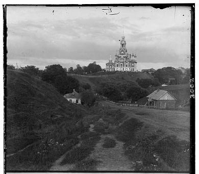
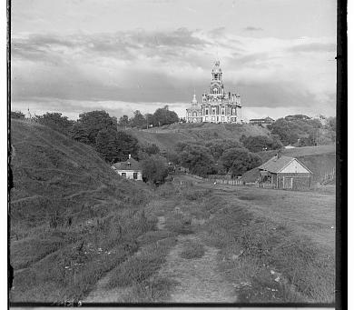
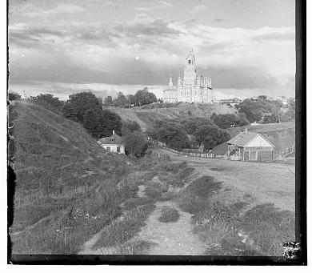
The simplest approach is to try every whole-pixel shift in a window and keep the one that makes the channel look most like the blue reference. This can be scored two ways:
Sum the squared pixel-wise difference between a shifted channel A and the reference B, over the cropped interior. Then, keep the shift that minimizes it.
Mean-subtract and unit-normalize both patches first,
then take their dot product. Keep the shift that maximizes it.
Both metrics trim 15% off every side before scoring, since the scanned plates have dark, uneven borders that have nothing to do with scene content. If left untrimmed, the search could align the borders instead of the picture. I chose 15% after sweeping different percentages (5, 10, 15, 20) and found no significant difference in the results.
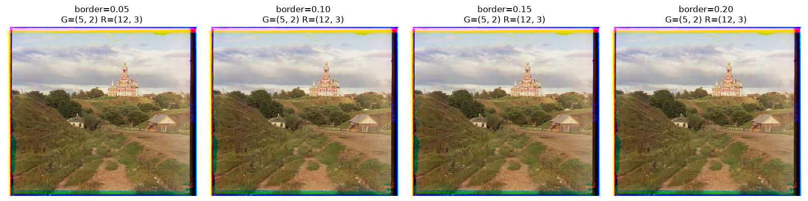
To determine the size of the search window, I swept a few radii (5, 10, 15, 20) on cathedral.jpg
and looked for the smallest one where both G and R shifts had settled and stopped landing on the search
boundaries. The smallest window that met these criteria was 15 pixels.
| window | G shift | R shift | G at boundary? | R at boundary? |
|---|---|---|---|---|
| 5 | (5, 2) | (5, 1) | yes | yes |
| 10 | (5, 2) | (10, 3) | no | yes |
| 15 | (5, 2) | (12, 3) | no | no |
| 20 | (5, 2) | (12, 3) | no | no |
Using a search radius of 15 pixels, both NCC and L2 converge on identical alignment offsets across all three JPEGs. The results below were generated using NCC.


The full-resolution .tif scans are far larger than the JPEGs and can need displacements
beyond the single-scale search range. However, widening a full-resolution search gets
expensive very fast, since every extra pixel of radius adds many more candidates to evaluate.
To tackle this, I use a coarse-to-fine pyramid approach. The idea is to estimate the large displacement while the image is small and cheap to search, then propagate that estimate up to full resolution and only search a small local neighborhood around it at each step.
Algorithm:
min_size), run the wider search directly.refine_window around it.When shrinking the image for the pyramid, I apply a blur filter to smooth out sharp details. If you just grab every second pixel, this can create false patterns in fine details like brickwork. This tricks the coarse search into picking a wrong shift. Since the remaining levels only check nearby pixels, the algorithm stays stuck on that mistake.
coarse_window=15 gives enough range at the smallest level. To determine the optimal
refine_window, I swept it on three plates (tobolsk.jpg,
melons.tif, emir.tif) chosen to span the range of behavior
(small JPEG and larger TIFs).
| image | rw | G shift | R shift | time |
|---|---|---|---|---|
| tobolsk.jpg | 2 | (3, 3) | (6, 3) | 0.10s |
| tobolsk.jpg | 3 | (3, 3) | (6, 3) | 0.11s |
| tobolsk.jpg | 4 | (3, 3) | (6, 3) | 0.12s |
| tobolsk.jpg | 5 | (3, 3) | (6, 3) | 0.14s |
| tobolsk.jpg | 6 | (3, 3) | (6, 3) | 0.17s |
| melons.tif | 2 | (82, 10) | (178, 13) | 2.01s |
| melons.tif | 3 | (82, 10) | (178, 13) | 3.04s |
| melons.tif | 4 | (82, 10) | (178, 13) | 4.54s |
| melons.tif | 5 | (82, 10) | (178, 13) | 6.22s |
| melons.tif | 6 | (82, 10) | (178, 13) | 8.94s |
| emir.tif | 2 | (49, 24) | (413, −788) | 2.04s |
| emir.tif | 3 | (49, 24) | (413, −788) | 3.15s |
| emir.tif | 4 | (49, 24) | (413, −788) | 4.67s |
| emir.tif | 5 | (49, 24) | (413, −788) | 6.30s |
| emir.tif | 6 | (49, 24) | (413, −576) | 8.65s |
| window | same G | same R | same both | total time |
|---|---|---|---|---|
| 2 | 3/3 | 2/3 | 2/3 | 4.15s |
| 3 | 3/3 | 2/3 | 2/3 | 6.30s |
| 4 | 3/3 | 2/3 | 2/3 | 9.33s |
| 5 | 3/3 | 2/3 | 2/3 | 12.66s |
| 6 | 3/3 | 3/3 | 3/3 | 17.76s |
Tobolsk and melons are stable from the smallest window. Emir is not: it sits at
(413, −788) for rw = 2 through 5, then
jumps to (413, −576) at rw = 6. refine_window = 6
is the value used from now on, since it's the smallest setting where every plate in
the sweep agrees with wider settings.
Multi-scale pyramid, NCC computed on raw RGB pixel values.

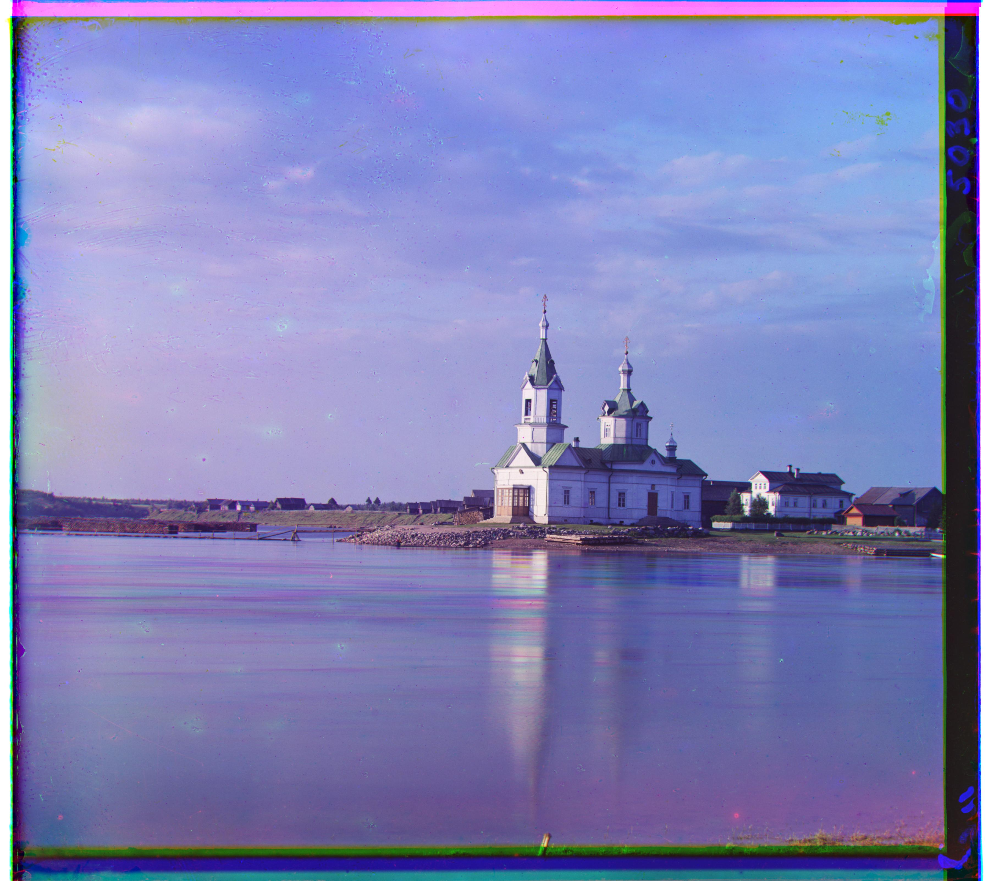
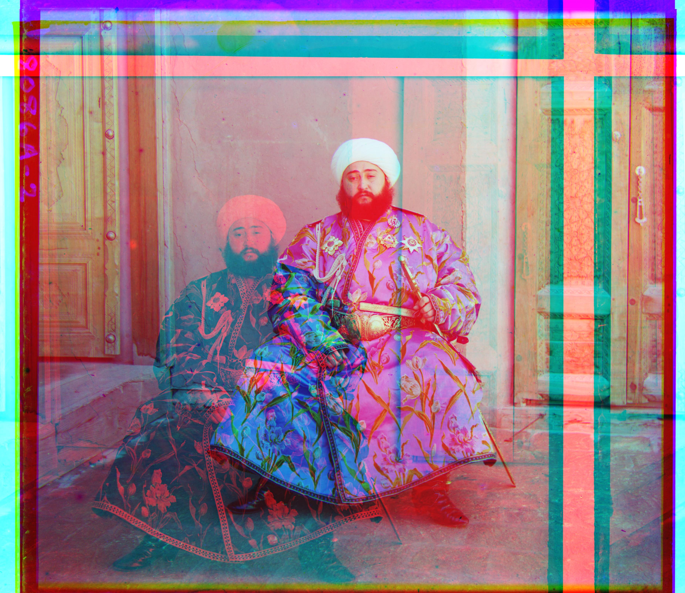
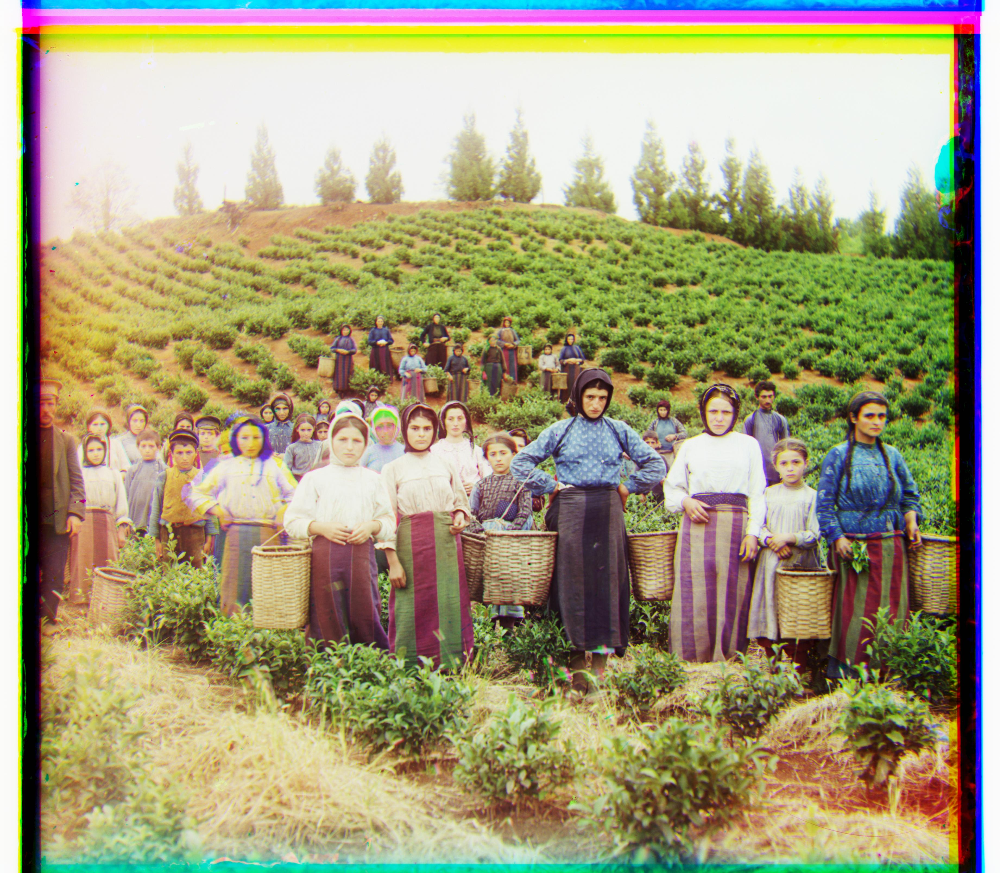

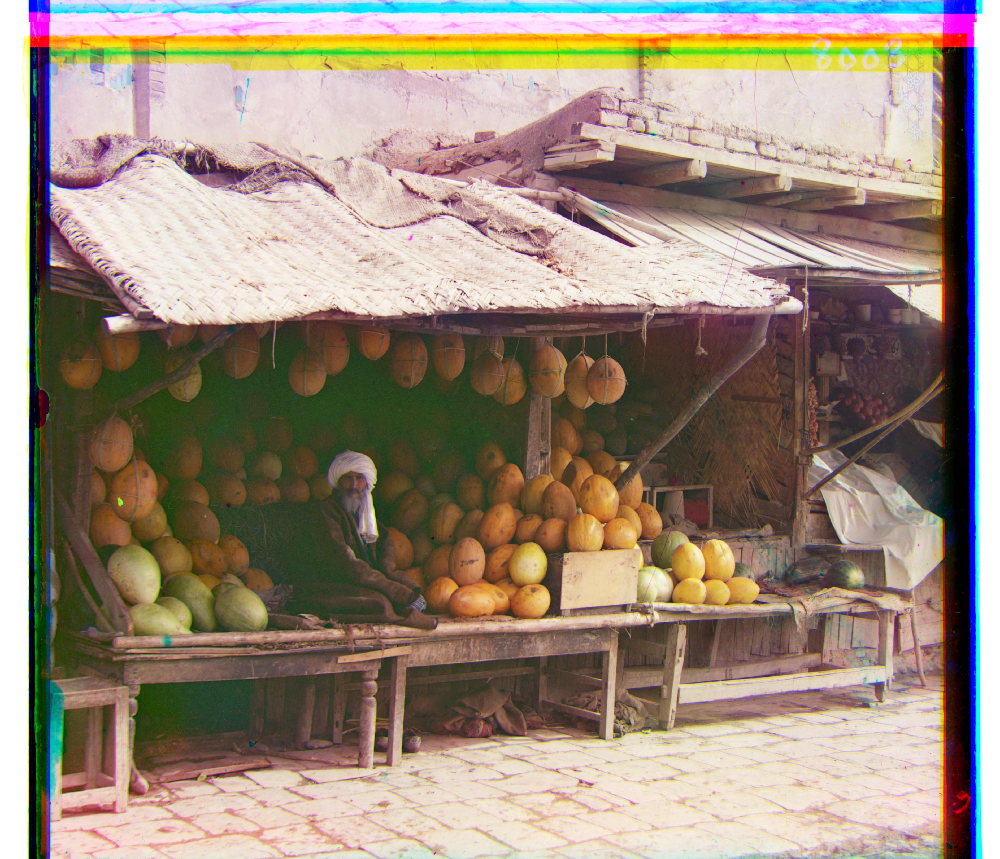


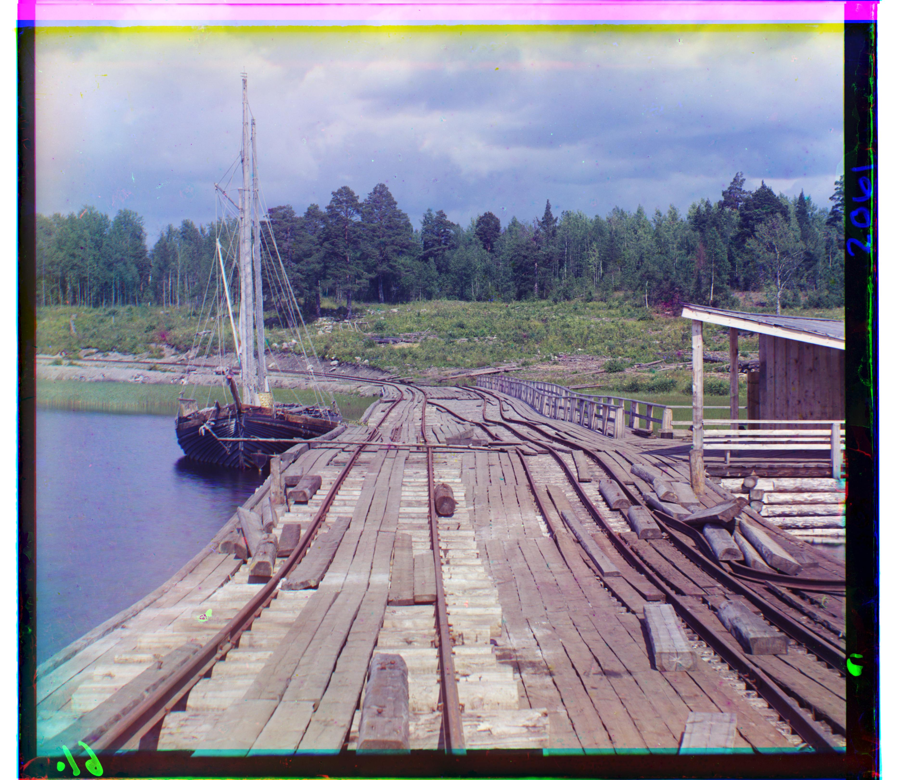
* Emir is visibly misaligned — see Section 3 and 5.
Emir's R shift isn't in line with its own G shift, or with the range of offsets on every other plate in the set. This is probably due to the difference in brightness between the different color channels, that can be seen below in the glass-negative:
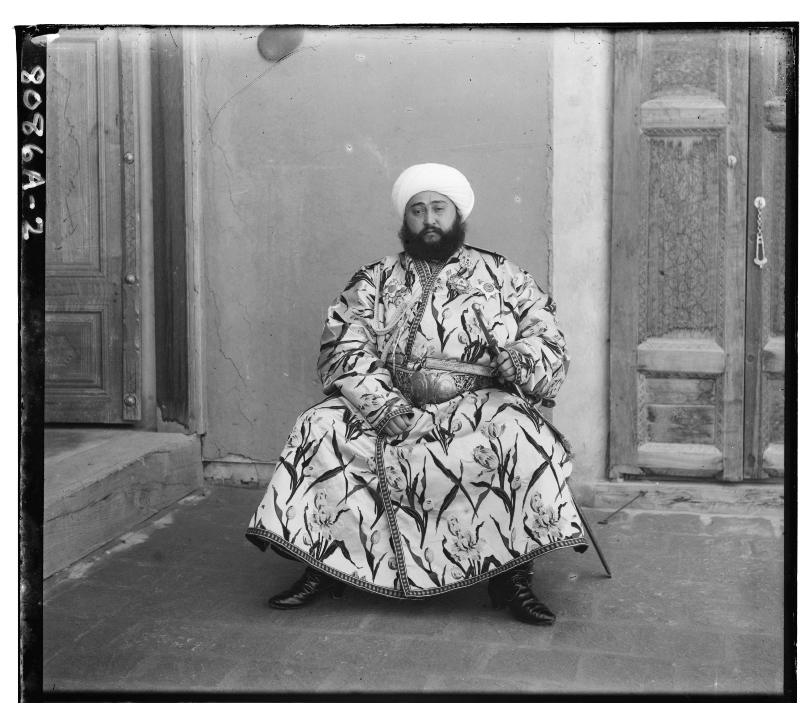
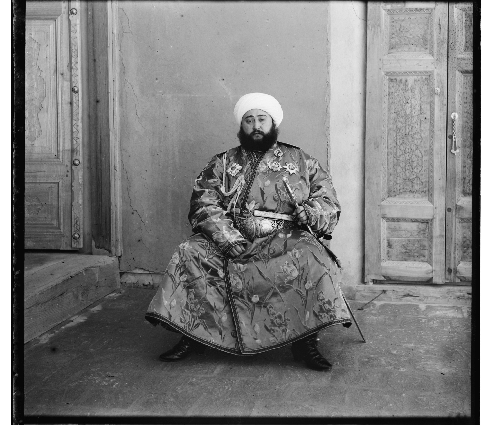
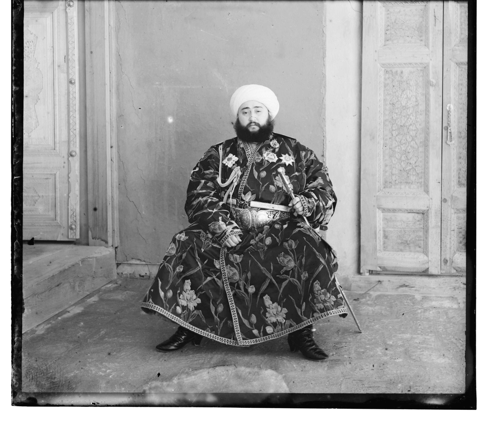
Raw-pixel NCC (and L2 with it) has no way to know the robe is the same surface. It just sees mismatched intensities, and can end up preferring a displacement that happens to line up brightness patterns rather than actual structure. This produces the visible ghosting and color fringing in the flagged plate in Section 2.
I downloaded four more plates from the Prokudin Gorskii collection, run through the same algorithm as Section 2. I picked a portrait, a group photo, a close-up study, and an architectural shot.
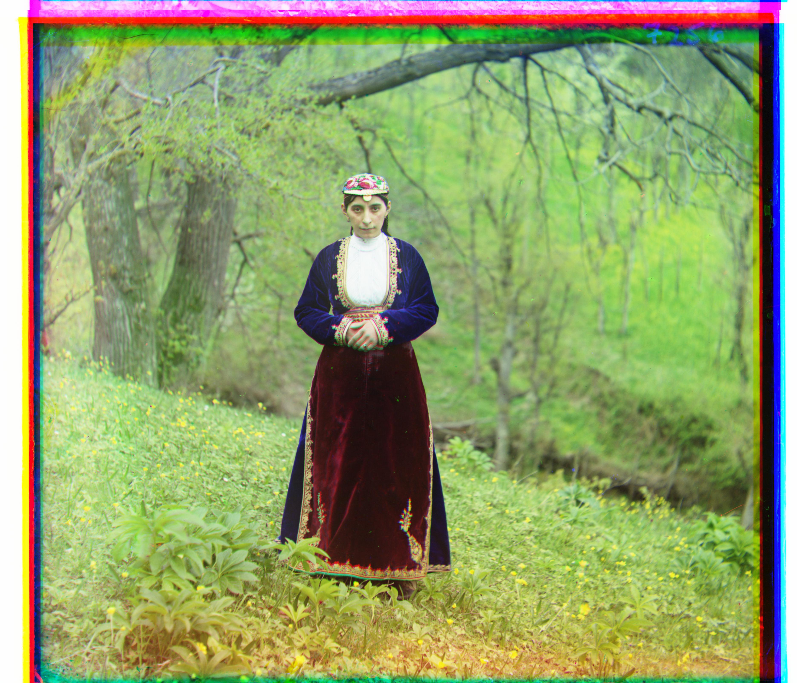
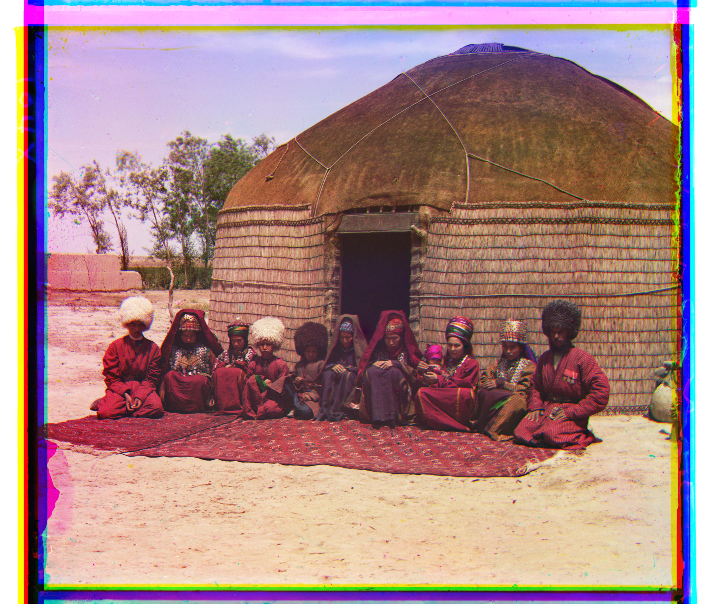
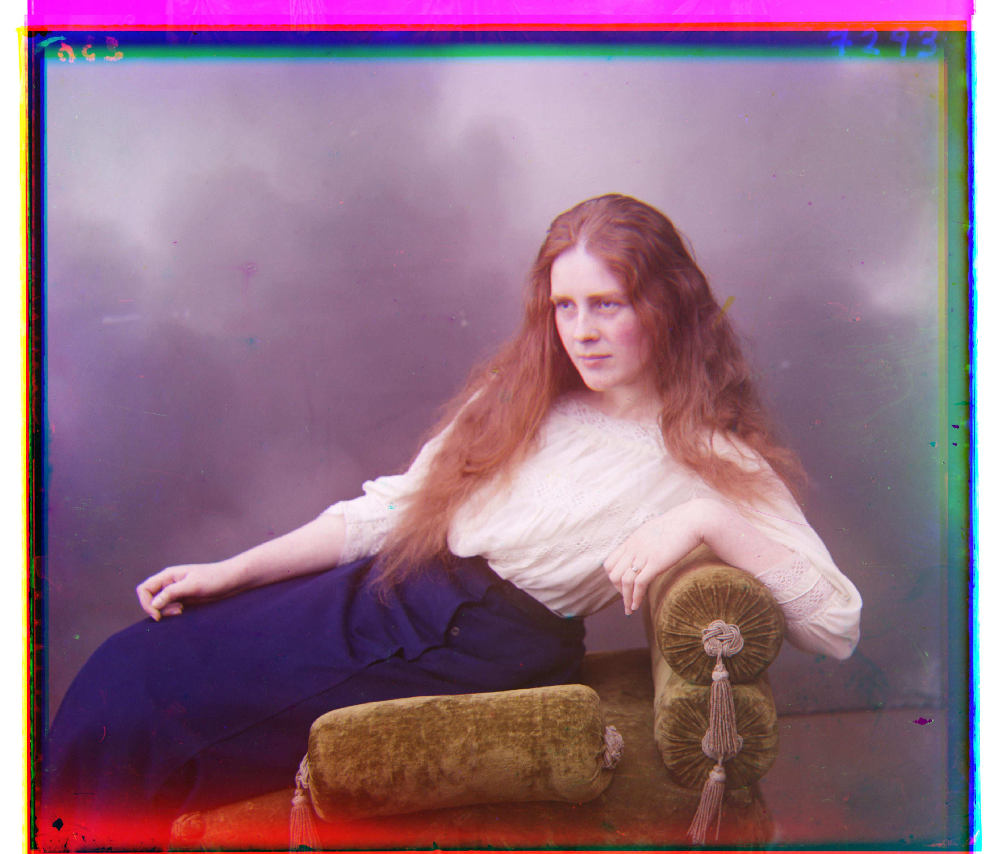
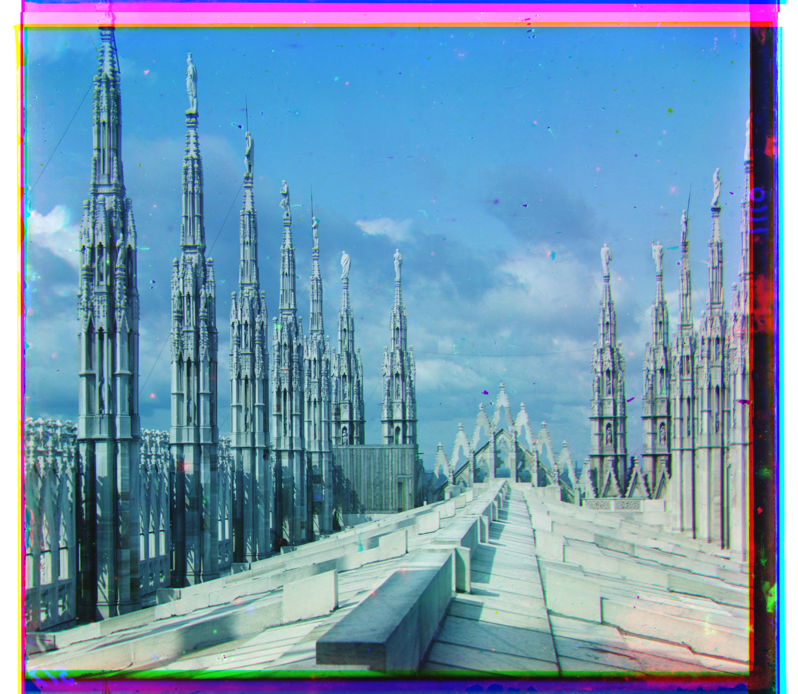
Instead of comparing raw intensities, gradient-based alignment scores candidate shifts on the
gradient magnitude of each channel. Gradients pick out spatial structure, such as edges,
folds, architectural lines, which holds up across channels even when absolute brightness doesn't. To test
this approach, I re-ran the multi-scale pyramid on emir.tif using NCC on gradient magnitudes
instead of raw pixel values.